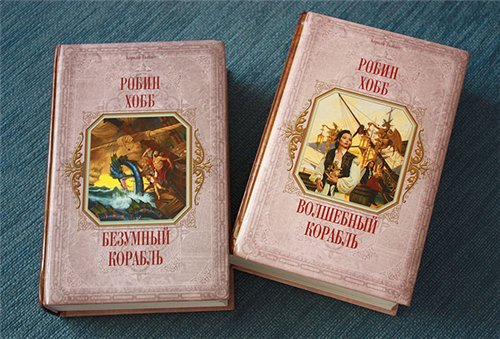

Ма́ргарет А́стрид Ли́ндхольм О́гден — американская писательница, в основном работает в жанре фэнтези. Википедия
Родилась: 5 марта 1952 г. (65 лет), Беркли, Калифорния, США
Номинации: Goodreads Choice Award в номинации «Фэнтези», ещё
Дети: Кэт Огден
 Торговцы Удачного – это особый сорт людей. Они смогли выжить на этой земле, зацепиться, врасти в нее корнями, разбогатеть. Но очень многим они заплатили за право жить здесь, как и их ближайшие соседи, а зачастую и родственники – жители Дождевых Чащоб. И они будут бороться со всем миром за право оставаться хозяевами своей земли. Но среди населения Удачного есть еще не только люди – есть Живые корабли, которыми владеют некоторые семьи торговцев из поколения в поколение. И плавающим на них не страшны ни пираты, ни течения, ни морские змеи, ни белые воды таинственной реки Чащоб. Действие цикла происходит в мире «Саги о видящих»